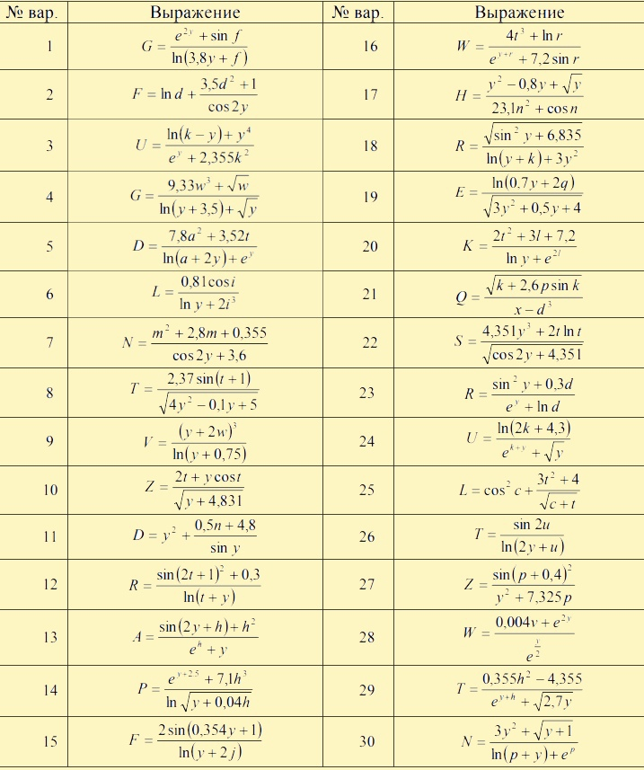

В языке C# есть несколько типов данных, которые мы можем использовать в нашем коде. Вот некоторые из них:
Каждый тип данных имеет свои особенности и ограничения, поэтому важно выбрать правильный тип данных для каждой переменной, которую мы создаем.
Переменные в C# - это именованные области памяти, которые мы можем использовать для хранения значений. Каждая переменная имеет свой тип данных и имя.
Для создания переменной в C# мы указываем ее тип данных, а затем имя переменной. Например, если мы хотим создать целочисленную переменную с именем `myNumber`, мы можем написать следующий код:
1
int myNumber;
Здесь мы создаем переменную `myNumber` типа `int`, которая будет использоваться для хранения целочисленных значений.
Чтобы присвоить значение переменной, мы используем оператор присваивания `=`. Например, чтобы присвоить значение 42 переменной `myNumber`, мы можем написать следующий код:
1
myNumber = 42;
При создании переменной важно учитывать ее область видимости. Область видимости переменной - это часть кода, где переменная доступна. В C# есть три типа области видимости:
1
void MyMethod()
{
int myNumber = 42; // локальная переменная
// ...
}
1
void MyMethod()
{
int myNumber = 42; // локальная переменная
// ...
}
1
namespace MyNamespace
{
int myNumber = 42; // переменная пространства имен
// ...
}
Давайте посмотрим на несколько примеров использования переменных и типов данных в C#:
1
int myInt = 42;
float myFloat = 3.14f;
bool myBool = true;
char myChar = 'A';
string myString = "Hello, world!";
Здесь мы создаем переменные различных типов данных и присваиваем им значения. Обратите внимание, что мы добавляем суффиксы `f` и `L` к числам с плавающей запятой и длинным целым числам соответственно, чтобы указать их тип.
Мы также можем использовать операции над переменными. Например:
1
int x = 5;
int y = 10;
int z = y + x; // здесь z будет равно 15. Здесь сложение
int f = y - x; // здесь f будет равно 5. Здесь вычитание
int q = y * x; // здесь q будет равно 50. Здесь умножение
int l = y / x; // здесь l будет равно 2. Здесь деление
int k = y % x; // здесь k будет равно 0. Здесь остаток от деления
| Математическая функция | ID функции в C# |
|---|---|
| √x | Math.Sqrt(x) |
| |x| | Math.Abs(x) |
| ex | Math.Exp(x) |
| xy | Math.pow(x,y) |
| ln | Math.Log() |
| log 10 | Math.Log10() |
| sin(x) | Math.Sin(x) |
| cos(x) | Math.Cos(x) |
| tg(x) | Math.Tan(x) |
| Максимальное значение | Math.Max() |
| Минимальное значение | Math.Min() |
| Округление до ближайшего целого | Math.Round() |
Инкремент и декремент - это операции увеличения или уменьшения значения переменной на 1 соответственно. В языке C# существуют две формы инкремента и декремента - префиксная и постфиксная.
Префиксная форма инкремента/декремента сначала изменяет значение переменной, а затем возвращает ее измененное значение. Постфиксная форма сначала возвращает значение переменной, а затем изменяет его.
Рассмотрим примеры:
1
// постфиксная форма инкремента
int a = 5;
int b = a++; // b=5, a=6
В этом случае значение переменной a увеличивается на 1 после того, как она была присвоена переменной b. Поэтому в результате выполнения этого кода значение b равно 5, а значение a равно 6.
1
// постфиксная форма декремента
int a = 5;
int b = a--; // b=5, a=4
В этом случае значение переменной a уменьшается на 1 после того, как она была присвоена переменной b. Поэтому в результате выполнения этого кода значение b равно 5, а значение a равно 4.
1
// префиксная форма инкремента
int a = 5;
int b = ++a; // b=6, a=6
В этом случае значение переменной a увеличивается на 1 до того, как она была присвоена переменной b. Поэтому в результате выполнения этого кода значение b равно 6, а значение a также равно 6.
1
// префиксная форма инкремента
int a = 5;
int b = --a; // b=4, a=4
В этом случае значение переменной a уменьшается на 1 до того, как она была присвоена переменной b. Поэтому в результате выполнения этого кода значение b равно 4, а значение a также равно 4.
Префиксная и постфиксная формы инкремента и декремента могут использоваться в различных ситуациях, например, для увеличения или уменьшения счетчика цикла или для изменения значения переменной в зависимости от условия. При выборе между префиксной и постфиксной формой необходимо учитывать порядок выполнения операций и требования конкретной задачи.
Константы представляют собой данные, которые не могут быть изменены во время выполнения программы. Давайте более подробно рассмотрим, что это такое и как использовать константы в C#.
В C# константы объявляются с помощью ключевого слова const. Синтаксис объявления константы выглядит следующим образом:
1
const "тип" "имя" = "значение";
Для примера, объявим константу для хранения значения числа Пи:
1
const double PI = 3.14159;
В этой лекции мы рассмотрели основные типы данных и переменные в языке C#. Мы также рассмотрели, как создавать переменные и как присваивать им значения. Знание типов данных и переменных является фундаментальным для программирования на C#, поскольку они позволяют нам хранить и обрабатывать данные в программе. Мы также рассмотрели области видимости переменных и операции над ними.
Однако, это далеко не все, что стоит знать о типах данных и переменных в C#. Например, в C# есть также специальный тип данных enum, который позволяет создавать перечисления значений. Есть также различные модификаторы доступа переменных, которые позволяют управлять их доступностью внутри и снаружи класса.
Кроме того, в C# есть множество других типов данных, включая массивы, списки, словари, структуры, классы и интерфейсы. Эти типы данных предоставляют более сложные способы хранения и обработки данных в программе.
Важно помнить, что правильное использование типов данных и переменных - это ключевой аспект разработки программ на C#. Правильное использование типов данных и переменных может помочь избежать ошибок и улучшить производительность программы.
записать арифметические выражения на алгоритмическом языке и указать порядок выполнения операций
Если есть вопросы или нашли ошибку смело пишите мне Данилу М.В.